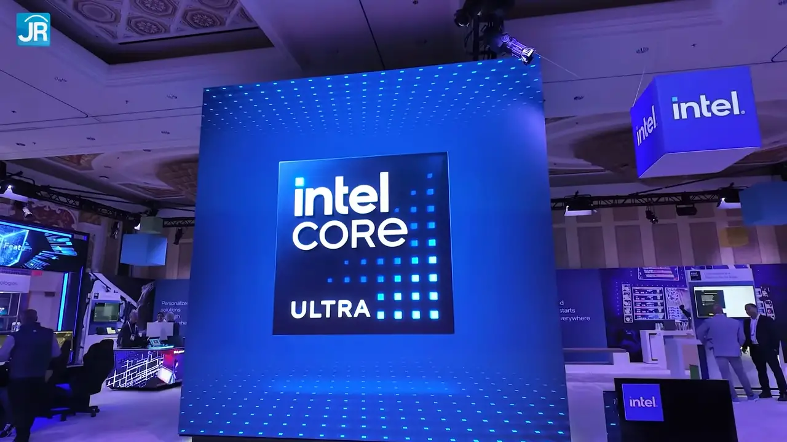
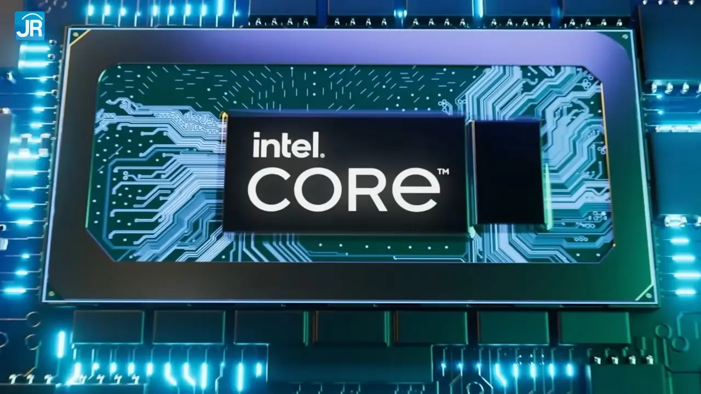
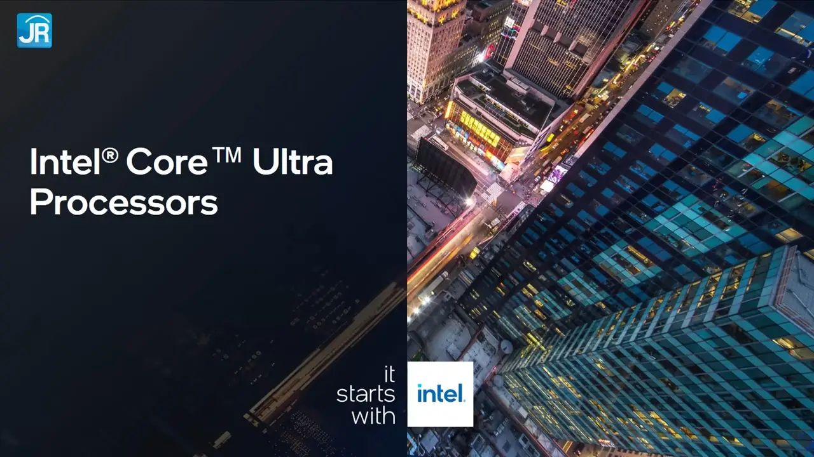
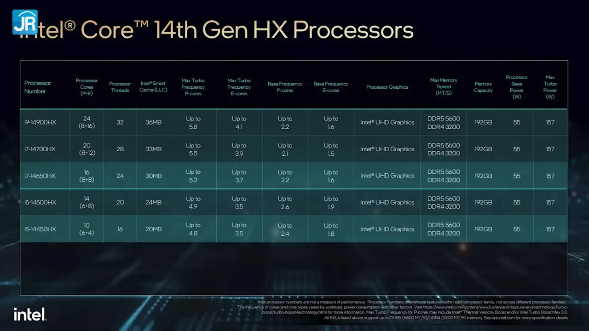
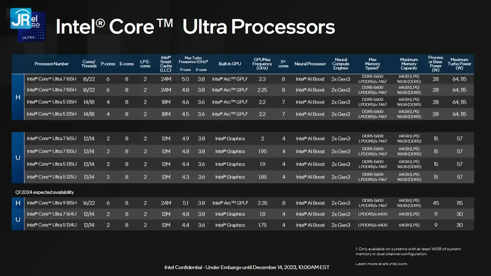
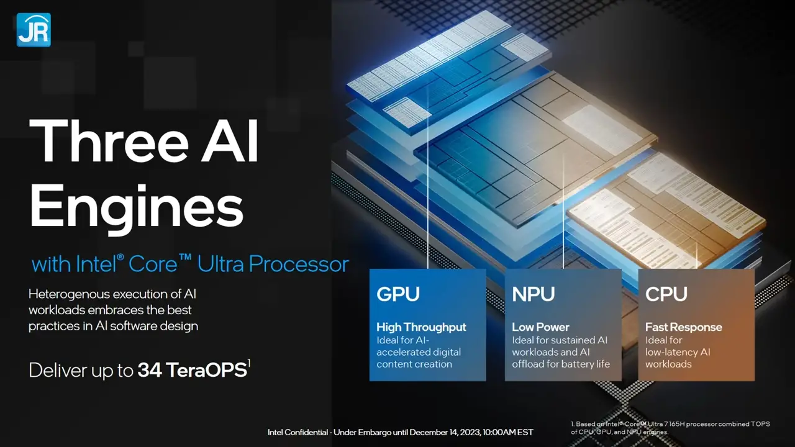

Preview Performa dan Kemampuan AI Laptop Intel Core Ultra
Prosesor Intel Core Ultra akhirnya dirilis bulan Desember 2023 lalu.
Berbeda dengan pendahulunya, prosesor ini sudah dilengkapi NPU, semacam Hardware khusus untuk menangani komputasi AI secara offline. Tidak butuh koneksi Internet. Selain itu sistem grafisnya juga diperbarui dengan arsitektur yang serupa dengan Graphics Card Intel Arc Series. Jadi main Game dengan integrated graphics seharusnya bisa lebih kencang dan lebih nyaman.
Nah, saat kunjungan kami ke CES 2024, nyaris semua produsen laptop memamerkan jajaran produk terbaru mereka dengan prosesor Intel Core Ultra. Bahkan, di CES 2024 ini, kami juga dapat kesempatan untuk melakukan pengujian singkat salah satu Laptop yang menggunakan prosesor Intel Core Ultra!
Prosesor Intel Core Ultra, Apa Itu?
Prosesor Intel di awal tahun 2024 sudah memasuki generasi ke-14. Untuk prosesor laptop generasi 14, ada tipe Core i, Core Ultra dan Core saja. Intel Core Ultra “generasi pertama” atau yang dikenal dengan kode Meteor Lake ini disebut Intel sebagai “Series 1”.
Dari tadi bilang “Core Ultra”. Sementara kan Intel selama ini prosesornya kan “Core i” sekian. Apa sebenarnya Core Ultra ini? Nah, sebelum bahas kemampuan Intel Core Ultra, kita akan coba bahas singkat dulu penamaan dari jajaran prosesor Intel generasi ke-14, setidaknya untuk yang sudah rilis di awal tahun 2024 ini untuk prosesor mobile, atau prosesor laptop.
Core i, sejauh ini digunakan untuk menyebut prosesor laptop generasi ke-14 kelas performa ekstrim, dengan akhiran “HX”. Prosesor Core i ini tidak menggunakan arsitektur Meteor Lake dan pastinya tidak dilengkapi NPU terintegrasi. Varian terbaru saat ini adalah generasi ke-14 yang pakai arsitektur “Raptor Lake”, masih mirip dengan generasi ke-13. Penamaannya masih diawali dengan angka 14, sebagai penanda generasi ke-14. Contohnya Core i9-14900HX. Saat ini, untuk yang masih pakai “Core i” ini, tidak ada lagi varian H, P, dan U.
Lalu, beralih ke Core Ultra. Nama ini baru digunakan Intel di generasi terbaru ini, dan tampaknya ke depan akan dipakai sebagai nama prosesor dengan NPU terintegrasi mereka. Saat ini prosesor Intel Core Ultra terbagi ke dalam dua seri yaitu H-Series dengan Base Power mulai dari 28 Watt dan U-Series dengan Base Power 15 Watt serta 9 Watt. Ini berbeda dengan sebelumnya ya, karena prosesor Intel sebelumnya dengan Base Power 28 Watt disebut sebagai P-Series. Jadi Core Ultra H-Series ini terlihat seperti menggantikan P-Series.
Seperti sebelumnya, penggunaan angka 5, 7, dan 9 untuk membedakan tingkatan performa dan fitur prosesor tetap diterapkan di sini. Hanya saja tidak ada lagi penggunaan huruf “i”. Jadi namanya Core Ultra 9, Core Ultra 7, dan Core Ultra 5. Saat pembahasan ini dibuat, belum ada varian Core Ultra 3.